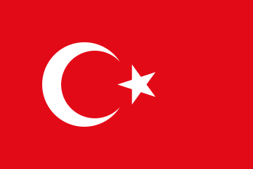

Anasayfa
İşlemler
İletişim

Yaptığım
işlemler
Gömülü dişlerin cerrahi çekimi
Komplikasyonlu dişlerin cerrahi çekimi
Dental
implantlar
kemik greftleme operasyonu
Apse ve kist operasyonu
Ağız içi yumuşak doku işlemleri
Çene ve yüz yaralanmaları ve kırıkları
Çene eklemi (TME) hastalıkları
Diş sıkma
(bruksizm)
Botoks uygulamaları